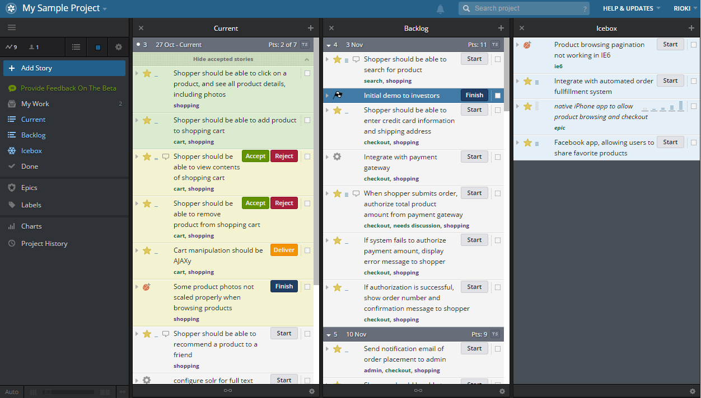
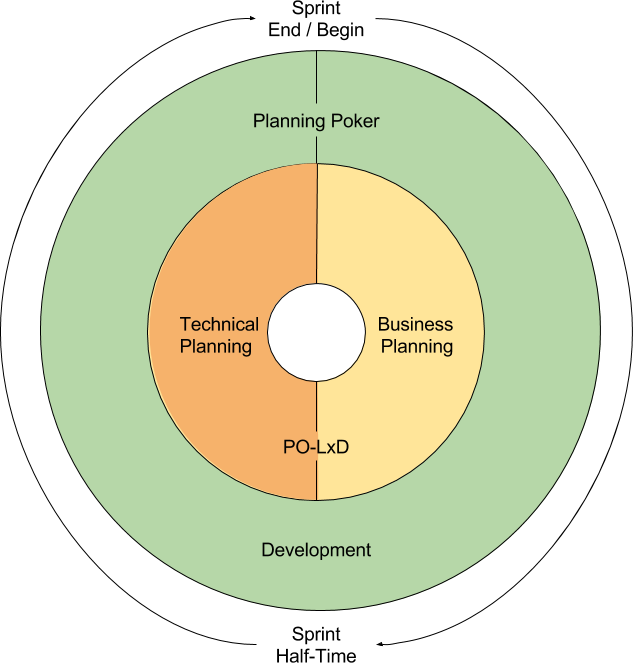
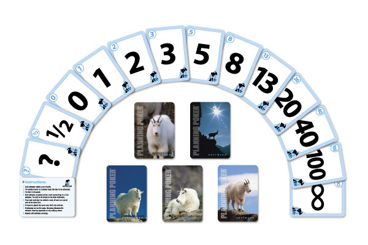
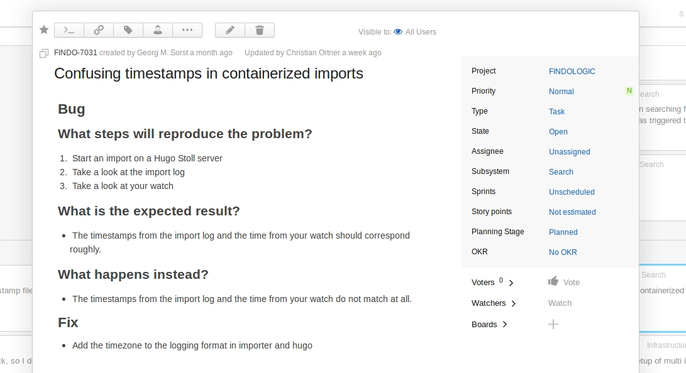
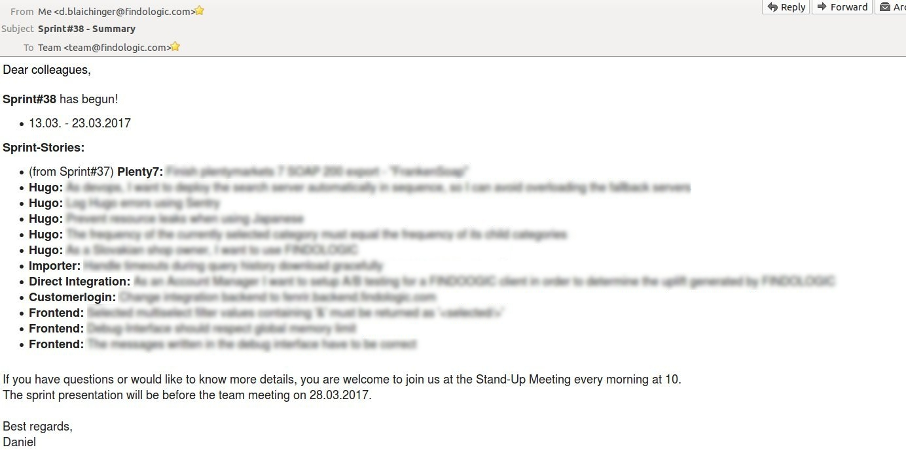
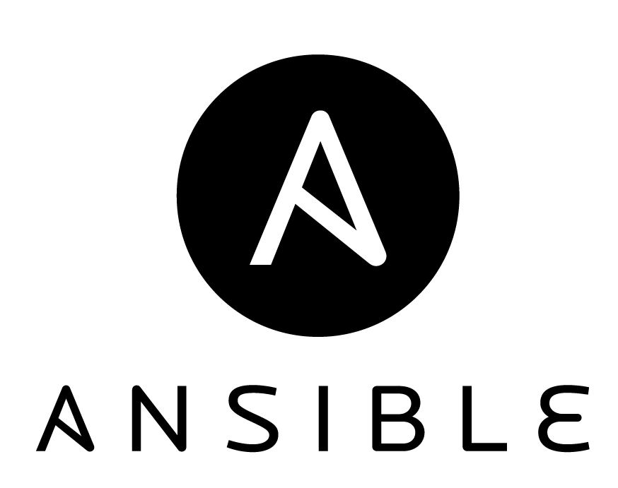
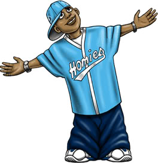
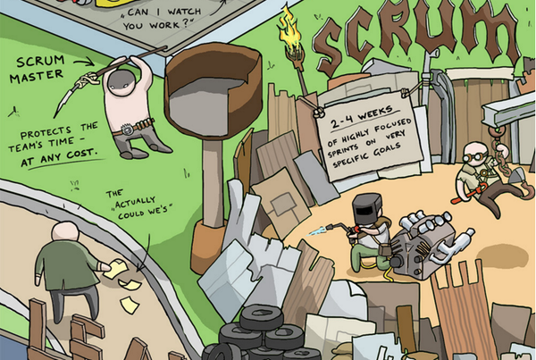
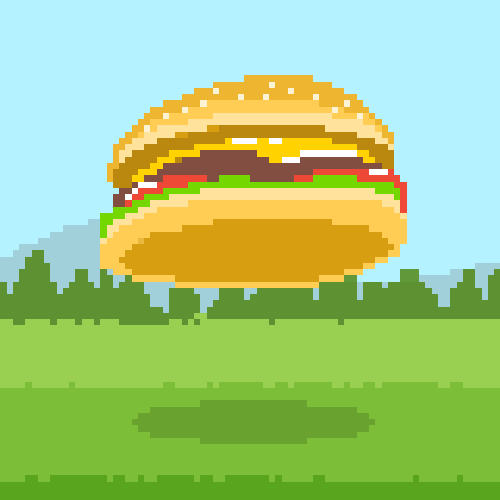

How to make your team more productive
Learnings from 44 Sprints
Daniel Blaichinger
- Since 2014 @ FINDOLOGIC
- Introduced Scrum in 2015
Scrum
Why did we make the change to Scrum?
- Long term planning
- Vacation & illness
- Missing feedback
Requirements for Scrum
- Team size ~4-9
- Self-organised team
- Individual responsibility
PivotalTracker
Youtrack
Essential parts of Scrum
(for us)
Roles
- Product Owner + CTO
- Lead Search Developer
- Lead Infrastructure Developer
- Lead Backend Developer + Scrum Master
- Developers
- Everyone is coding!
Circle of Sprint
Po-LxD Meeting
- One week before Planning-Poker
- Stories for technical planning
- Each LxD defines the stories for his component
How to write a user story
- Definition of Go
- Extend or modify the definition documents as needed -> Discussed in Retrospective
- Be as precise as possible! -> "Import 5 shops"
- Consider error cases
- Think about breaking tests, especially for bigger changes
How to write a infrastructure story
- If the scope of the story is clear and defined -> Normal story for estimation
- If the task is not clear or unexpected impediments could occur -> Time-Box Story
Planning-Poker
Planning-Poker
Planning-Poker
Solves:
- Long term planning
- Vacation & illness
Sprint summary
Stand-up Meeting
Stand-up Meeting
- Document
- First part with
- Support
- Project management
Retrospective
- What went well during the sprint?
- What went wrong during the sprint?
- What could we do differently to improve?
Sprint presentation
- Present the stories you finished your own
- Try to be as non-technical as possible
- Use screenshots, videos or the real UI!
Sprint presentation

Automation
Build monitor
Infrastructure
Ansible
# playbook.yml
---
- hosts: all
tasks:
- name: 1. install Apache
apt: name=apache2 state=present
- name: 2. install PHP module for Apache
apt: name=libapache2-mod-php5 state=present
- name: 3. start Apache
service: name=apache2 state=running enabled=yes
- name: 4. install Hello World PHP script
copy: src=index.php dest=/var/www/index.php mode=0664
Ansible
ansible-playbook playbook.yml
Deployment

Use a tool you prefer!
How to get info from another department to the development?
Homie
- "Gestörte"
- Helping the support and project management
- Debugging code to investigate potential bugs
- The time spent is not calculated within a sprint
Support Ticket-Review
- Customer reports problem
- Can't be solved right away
- Ticket will be created
- Twice a week the tickets will be investigated
- On bug suspicion, a homie debugs the code
Support Ticket-Review
- What steps will reproduce the problem?
- What is the expected result?
- What happens instead?
What we learned from
44 retrospectives
What we learned
- Avoid bottlenecks on each lane -> Review
- Keep your automation running
"Cannot allocate memory" - Merge-Conflict during deployments -> Automate deployments
- Do not forget to click test with another colleague
- Write unit tests for 0, 1, 2+ cases -> Data Provider
- Code refactoring preferable within smaller stories
What we learned
- New colleagues have a fresh view on the process and setup
- Writing document for introduction
- Updating setup in Readme.md
- Explaining infrastructure with a diagram
- Make internal trainings for non-technical colleagues to avoid disturbance during a sprint
Conclusion
- If suitable, use an agile software method and adapt it to your needs!
- Do not underestimate the retrospective, it helps to be more efficent over time.
- If possible, automate your regular tasks to reduce mistakes and save time.
- Be transparent in what your are doing and try to coordinate goals with other departments.
- Everyone has to respect the basic rules of Scrum
- The scope of an estimated story has to be kept, otherwise it needs a re-estimation
- Additional work during a sprint is not acceptable, because the defined sprint goal may not be reached -> Definition of Priority
- Avoid disturbance -> Delegate to homie
If the organization allows interruptions to the team’s work during the Sprint, then the team will not meet its commitments and this will diminish trust between the team and its stakeholders.
That lack of trust will lead to onerous control mechanisms that reduce the team’s ability to self-organize which, in turn, will prevent the team from becoming a high-performance team.
Questions?

Thank you!
Almost there...
YEARS SBG WEB DEV